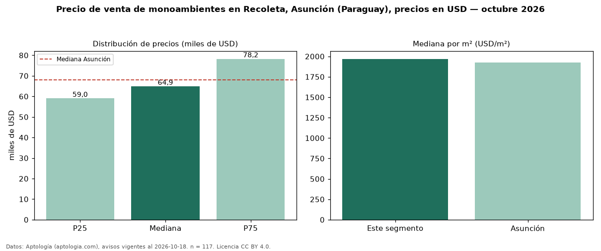

Precio de venta de monoambientes en Recoleta, Asunción (Paraguay), precios en USD — octubre 2026
Con 117 avisos vigentes, el precio mediano de monoambientes en venta en Recoleta, Asunción (Paraguay) es USD 64.853. Prácticamente coincide con la mediana de Asunción para monoambientes (USD 68.000). Por metro cuadrado, la mediana es USD 1.969/m² (n = 105 avisos con área), 2 % por encima de Asunción (USD 1.925/m²). Por precio mediano es el puesto 6 de 7 barrios de Asunción con al menos 30 avisos de monoambientes en venta (USD): entre las más económicas. El área mediana anunciada es 35 m². La mitad central de los avisos va de USD 59.000 a USD 78.225 (razón 1,3), una dispersión baja. Datos: Aptología (aptologia.com), CC BY 4.0 — https://www.aptologia.com/py/venta/asuncion/recoleta. Archivos: PDF, CSV con las cifras y gráfica PNG.

| Avisos únicos | 117 |
|---|---|
| Percentil 25 | COP 59.000 |
| Mediana | COP 64.853 |
| Percentil 75 | COP 78.225 |
| Mediana por m² | COP 1.968 |
Fuente: avisos vigentes de portales inmobiliarios recopilados por Aptología, deduplicados (mínimo 30 avisos únicos por celda). Precios pedidos, no cerrados. Fecha: 2026-10-18.